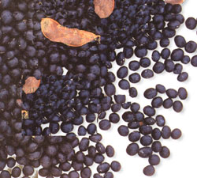
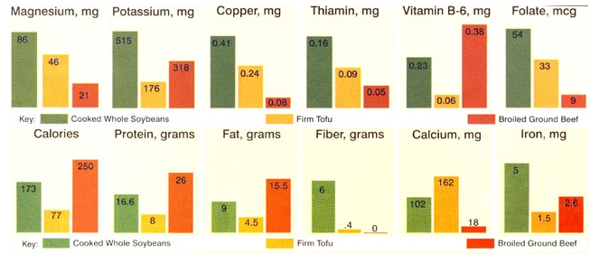
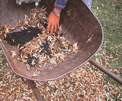
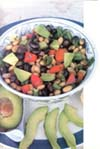
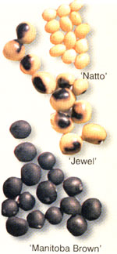
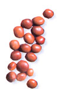

Packed with protein fiber, vitamins and minerals, soybeans are easy to grow and taste terrific
My discovery of soybeans led to the creation of my seed company, Salt Spring Seeds, in 1986. I was amazed to find that some varieties of this extraordinarily nutritious crop are delicious when baked, boiled or toasted, unlike the indigestible ones sold in many stores (which you may have already tried and rejected). Most varieties available in North America have been bred for animal fodder or for processing into tofu and other soy products, rather than for direct human consumption. Grow or buy the right culinary varieties and you'll get a pleasant, soft-crunchy, mild-flavored superbean that you can use in any dish that calls for regular beans-soups, salads, casseroles, even make your own soynut snack food.
Soybeans have been cultivated for more than 5,000 years, most notably in China and Japan. Unfortunately, today we process this wonderful legume in every imaginable fashion instead of simply cooking it up. Soybeans are very high in protein and are the only legume that contains all nine essential amino acids (the only proteins the human body can't manufacture on its own). They contain no cholesterol and are low in saturated fats and sodium. They are an excellent source of dietary fiber and are very rich in iron, calcium, B vitamins, zinc, potassium and magnesium. But much of this goodness is diminished when they are processed. As the charts below show, tofu contains half as much protein, and much less fiber, vitamins and minerals than cooked whole soybeans.
Despite the exaggeration of protein needs in North America (we don't really need to eat as much as "they" say we do), high-protein crops are becoming more necessary as it becomes increasingly expensive and dangerous for so many humans to eat at the top of the food chain. Vast acreages of soybeans are grown as fodder for cattle and pigs. The heavily subsidized meat and clearly industries extract a heavy toll on both our Water and soil resources. My question is, why use so many resources to grow soybeans to feed animals to feed people, when we could simply be eating these mild, nutty, nutritious beans directly?
The drought tolerance of soybeans is a special asset, as water is becoming an increasingly precious resource. And soybeans require minimal fertilizer because they fix nitrogen from the air. The fact that soybeans can he simply cooked and eaten keeps energy for preparation to a minimum. Freezing and canning are unnecessary, as are fancy plastic packages. In short, organically grown soybeans are probably one of the most ecofriendly and nutritious foods you can eat. And if you grow your own, you'll find that freshly harvested homegrown beans are more digestible and require much less cooking time than most store boug ht beans.
Brown and black varieties such as 'Jacques Brown,' 'Hokkaido Black,' 'Jewel' and Lammer's Black' have the best flavor for dry soybeans, but it's hard to find these except through a few seed companies. Most yellow or tan types found in grocery and health-food stores are hard to digest and take forever to cook. Soybeans have long been known to contain many anticancer factors and recent research has shown that black soybeans are much higher in those factors than other soybeans.
Edamame or butter bean soybeans are varieties that are best used at the green stage, when the seeds have just plumped the pods. They are a taste sensation in July and August, and they freeze well for year round pleasure. Most of the varieties recommended here for dry beans also are good harvested at this earlier green stage. (See "Delicious Edamame" in the June/July 2002 issue for more details, including best edamame varieties for various regions.)
A loose, well-drained loam is what soy-beans like best, but they do well in a wide range of soil conditions. Like most other vegetables, they prefer soil on the acidic side (pH from 5.8 to 7). These beans are a warm weather crop, and they should be planted at around the same time as corn. Soil and air temperatures of at least 55 to 60 degrees are needed for good germination.
Plant your seeds about 1 inch deep (or shallower if your soil tends to form a hard crust) in rows that are 1 to 2 feet apart. Seeds must be able to absorb enough moisture to germinate, so if soil is low in moisture or sandy, then plant twice as deep. Soybeans do well either in raised beds or in traditional rows. Although I space my soybeans 5 to 6 inches apart so there is enough distance to safely hoe between them, they are fine at even 2 inches apart. If you case a rototiller for weed control, it is most efficient to plant rows slightly snore than a rototiller's width apart.
As with other legumes, soybean roots host nodule-forming bacteria that can convert the nitrogen in the air to a plant-usable kind. If soybeans have not been grown in your soil before, it is a good idea to inoculate the seed with the proper strains of nitrogen-fixing bacteria, available at farm and garden stores or through seed catalogs.
It is important to weed in the early stage, as soybeans can be much slower to get going than the common weeds that love June weather. I usually hoe and hand weed two or three times before the soybean plants form a canopy that shades out competition. Reaching deep into the ground, soybeans have a fairly pronounced taproot that makes them quite drought-tolerant. The most important time to ensure adequate soil moisture is from flowering in early summer through pod formation. In the many years I've been growing soybeans, I've had no problems with pests or diseases. I do turn my crops under every year and wait several years before I grow them again in an area where they previously were planted.
Soybeans are ready to harvest as dry beans when the leaves have fallen and the beans rattle in their pods. You can pick the pods individually, or they can be quickly stripped from the stalk with an up-ward motion of one hand. (Wear gloves, and hold the stalk lower down with your other hand.) I usually gather my harvest in large buckets.
Pods can be shelled one by one or rubbed apart by foot in a threshing box. To thresh by foot, the seeds must be dry enough that a fingernail can't make an indentation. Chaff can be removed with suitable screening or blown away with a fan or hair dryer. I use a small air compressor with a blow-nozzle attachment. I always leave my seeds on screens in the sunlight for an extra day or two to ensure maximum drying. Yields aren't as high as for other beans, but soybeans are a much more substantial food. A 100-foot row will fill a 1-gallon jar with about 8 pounds of soybeans. Intensive raised beds can yield almost 4 pounds per 36 feet. Soybean varieties don't cross readily, so saving your own seed for next year is easy-just don't eat all you harvest.
Homegrown soybeans need about 60 to 90 minutes of simmering after an overnight soaking to be cooked al dente. Most commercial beans will need at least twice that long. Soybeans can be substituted for other dried beans in many recipes. They are more filling than pintos or kidneys because they are higher in both protein and oil. For this reason, when substituting soybeans for other legumes you can reduce the required amount by about one-third. Here are three simple recipes to help you enjoy this remarkable food.
3 cups hot cooked soybeans
1/4 to 3/4 cup oil
1/3 cup vinegar or to taste
2 cloves garlic, finely chopped
1/2 cup scallions or chives, chopped
1/2 cup red or green pepper, chopped
1/2 cup celery, chopped
1/3 cup black olives, chopped
1/2 avocado, chopped
2 Tbsp. parsley, chopped
2 Tbsp. dill, chopped
Combine oil, vinegar, garlic and salt and pepper to taste; pour over hot beans. Cover and marinate in refrigerator. Stir in chopped vegetables and herbs. Serves 4 to 6.
Soybean and Rice Curry
3/4 cup cooked brown rice
3/4 cup cooked soybeans
1 medium onion, chopped
2 Tbsp. soy sauce
2 Tbsp. oil or butter
1 to 2 tsp. curry powder
Sauté onions in oil; mix with soy sauce and curry powder. Combine rice, beans and sauce; stir well until thoroughly heated.
Place cooked soybeans (add a few garlic cloves or a hot pepper to the cook pot for extra flavor) on a cookie sheet in a 250-degree oven for a couple of hours or until crisp; stir occasionally. Makes a crunchy, nuttytasting and nutritious snack.
This article was adapted from The Whole Organic Food Book by Dan Jason. To order, see MOTHER's Bookshelf on Page 116.
Abundant Life Seed Foundation
PO. Box 772
Port Townsend, WA 98368
(360) 3855660
Salt Spring Seeds
Box 444, Ganges PO.
Salt Spring Island, B.C.
V8K 2W1 Canada
www.saltspringseeds.com
(250) 537-5269
If you've tried canned soybeans and didn't like them, or if you tried cooking dry soybeans and found they took too long to cook, we urge you to give these supernutritious beans another try. We found that home-cooked soybeans had much better taste and texture than the two brands of canned store bought soybeans we tried. And we confirmed that Dan Jason is right about cooking times: We got some fresh dry soybeans just a few months old and compared them with store-bought beans of unknown age. After soaking overnight, our fresh dry beans were tender in less than an hour, while the store-bought beans took eight hours (!)-three on top of the stove and five more in a crock-pot before they were tender.
So, where can you buy fresh, faster-cooking dry beans if you don't grow your own? We checked with several natural food distributors and the only company we found that could promise the bulk of their dried soybeans come from the most recent harvest was Eden Foods. They offer organic black soybeans and other beans in 25-pound bags-a bit more than one family might want, but you could split the bag between several households. You can contact Eden Foods at (888) 441-EDEN or www.eden-foods.com . - MOTHER
Soybeans are even more prominent in my thoughts these days, since so many farmers are growing genetically engineered (GE) soybeans developed by the Monsanto Company to withstand applications of their herbicide product Roundup (glyphosate). Roundup is the biggest-selling herbicide worldwide and basically kills any green living thing it touches. To my mind, there is a qualitative difference between a soybean with extra genes inserted to render it immune to such a powerful poison and the original soybean.
Although we don't know what transgenic soybeans and other GE crops will do to us or to the environment, we do know their introduction into the marketplace has been rapid and is virtually unregulated. More than 74 percent of cultivated soybeans in North America are "Roundup Ready" and about 60 percent of food products contain processed soybeans. These GE foods are not labeled and the North American public is being denied the right to know which foods contain GE products. If you're buying soybeans or other soy products, those labeled 'Certified Organic' will be GE-free (although there is growing controversy about the problem of contamination of organic and other non-GE crops by pollen from neighboring GE plants).
|
 |
 |
 |
|
|
 |
 |
|
 |
|
|